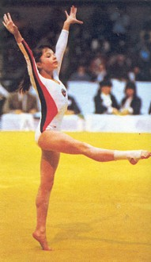

Olga Bicherova (USSR)
1981 World AA Champion
1982 World Cup AA Champion
1983 European AA Champion

Medal Total
- World Championships:
3 Gold
- World Cup:
3 Gold, 1 Silver, 1 Bronze
- European Championships:
3 Gold
Olga was born on October 26, 1967 in Moscow. Olga first took up figure skating, at the age of
four. When she was six, a group of gymnastics coaches saw her in a class
display and suggested that she try gymnastics. After a year, she gave up
figure skating to concentrate on gymnastics.
At the Spartak club, Boris Orlov coached her to the world
AA title in 1981, although her Western debut, at the European Championships several months earlier, was decidedly unsuccessful (23rd AA). When he accepted a coaching position in The
Netherlands, she switched to the Central Army Sports Club (CSKA) and trained with coaches Viktor and Irina
Razumovsky. Olga had a long career (her last competition was in 1988) and
studied journalism at Moscow State University. She married fellow gymnast Valentin
Mogilny in 1986 (they divorced in the late 1990s) and even coached him for a while. With their son,
Mikhail, they went to France in the early 1990s to work as coaches. Olga still lives there with her French husband, with whom she had two more children.
-
- Competition Results
-
- 1978
Jr. Prague-Moscow Dual Meet: 1st Team, 3rd AA
1979
- Jr. Friendship Tournament (Druzhba): 1st
Team, 9th AA, 5th A
Jr. GDR-USSR Dual Meet: 2nd AA
Jr. USSR Championships (Candidate for Master of Sport): 1st AA, 1st V, 2nd FX
Jr. USSR Cup (Candidate for Master of Sport): 5th AA, 2nd B
-
- 1980
Jr. Friendship Tournament (Druzhba): 1st Team, 1st AA, 1st V,
2nd FX
- Jr. GDR-USSR Dual Meet: 7th AA
Jr. USSR Championships: 3rd Team, 1st AA, 1st V, 2nd B
TBS Cup: 1st V, 1st UB, 1st FX
-
- 1981
- Chunichi Cup: 1st AA, 1st V, 1st B
- European Championships: 23rd AA, 4th V
- Jr. Friendship Tournament (Druzhba): 1st AA
Moscow Championships: 1st AA
Schoolchildren's Spartakiade: 1st Team, 3rd AA, 6th FX
Tokyo Cup: 1st V, 1st B
- USSR Championships: 4th AA, 3rd V, 4th UB
USSR Cup: 9th AA (prelims)
- World Championships (Moscow): 1st Team, 1st AA,
8th UB
-
- 1982
- Budapest Invitational: 1st B
World Cup: 1st AA, 1st V, 1st FX, 2nd UB, 3rd B
- USA-USSR Dual Meet: 7th AA
-
- 1983
- European Championships: 1st AA, 1st V, 1st FX
USSR Cup: 18th AA, 2nd V,
- World Championships (Budapest): 1st Team,
5th V
-
- 1985
- University Games: 1st Team
USSR Championships: 9th UB
USSR Cup: 10th AA
-
- 1986
- Leningrad International: 6th AA, 2nd V, 3rd B
USSR Championships: 4th UB, 5th V, 6th B
USSR Cup: 5th AA
USSR Spartakiade: 4th AA, 6th B
-
- 1987
- USA-USSR Dual Meet: 1st Team, 8th AA
-
- 1988
- Champions All: 10th AA
- This page was created on January 27,
1998 and was last updated on July 19, 2024.
© Gymn Forum
-